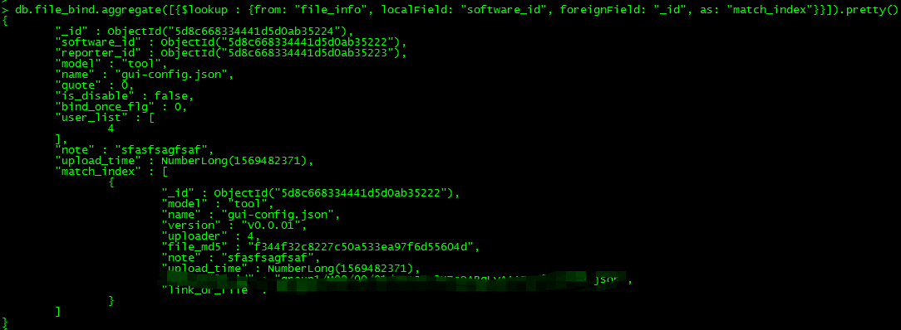
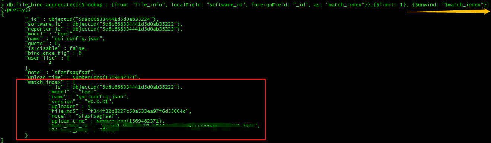

MongoDB多表查询
在之前的博客中就有对MongoDB一些操作的总结，但确实也遗漏了一些操作，这里将其补齐上来，毕竟以后自己也看的到，补充一个知识点是，MongoDB关于连表查询的操作，$lookup。
$lookup语法
执行左连接到一个集合，必须在同一数据库中
$lookup添加了一个新的数组字段，该字段的元素是 joined集合中的匹配文档。
$lookup 语法如下:
1 | { |
| Field | Description |
|---|---|
from |
右集合，指定在同一数据库中执行连接的集合。此集合不能shared分片。 |
localField |
指定左集合（db.collectionname）匹配的字段。如果左集合不包含localField，$lookup 视为null值来匹配。 |
foreignField |
指定from集合（右集合）用来匹配的字段。如果集合不包含该字段，$lookup 视为null值来匹配。 |
as |
指定要添加到输入文档的新数组字段的名称。新的数组字段包含from集合中匹配的文档。如果在文档中指定的名称已经存在，现有的领域覆盖。 |
例子
使用mongo客户端，输入命令：
1 | db.file_bind.aggregate([{$lookup : {from: "file_info", localField: "software_id", foreignField: "_id", as: "match_index"}}]).pretty() |

$lookup相当于将右集合所有符合条件的记录，都附加在左集合的记录下，所以match_index是被一个数组包裹的，当我们需要把数据给拆开时，我们需要聚合操作中的另一个函数："$unwind"。
1 | db.file_bind.aggregate([{$lookup : {from: "file_info", localField: "software_id", foreignField: "_id", as: "match_index"}}, {$limit: 1}, {$unwind: "$match_index"}]).pretty() |
